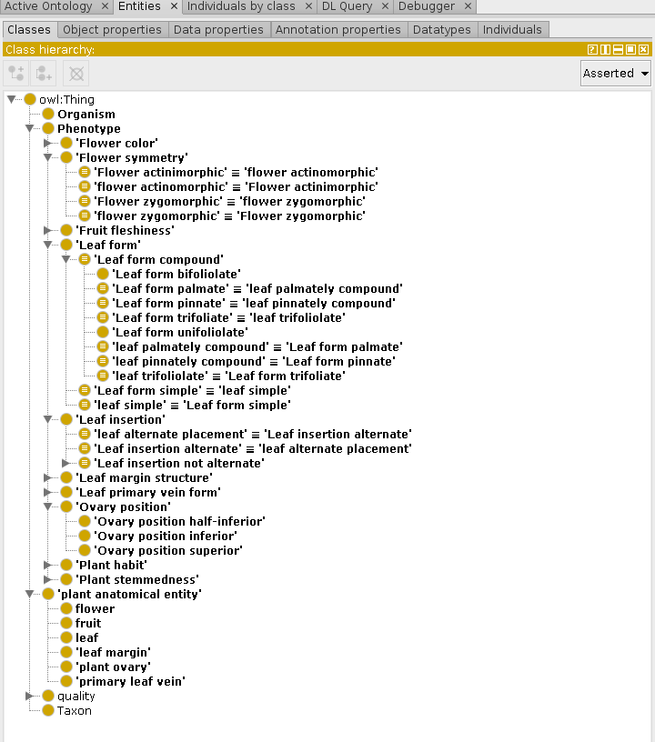

Blog 5: Sharing phenotype data
Posted by Cam on 2019-03-08
I got diverted from “name wrangling” these past few weeks, and have been thinking about morphological characters and phenotypes. Among the goals of our NSF-funded project is to develop a taxon × character matrix for all the ca. 2,300 taxa we will eventually have in the Flora. This matrix can then be used for analyses and in descriptions of taxa, but the main use will be in an interactive identification key for Alaskan plants. An interactive key differs from a traditional dichotomous key primarily in allowing the user to start with any character they may have handy, rather than in pre-determining the first character couplet. An interactive key is essentially the cumulative application of character filters on the taxon × character matrix until a single or small number of taxa remain.
Our character list
Our plan in the proposal was to assemble data on enough characters to reduce the taxa list to a number where visual scanning of thumbnail images would allow selection of a final identified taxon. The primary trade-off for us in choosing the number of characters to score is “discriminatory capability” (i.e., reducing the potential taxa list as much as possible) vs. time needed to assemble the matrix. Since we intend the interactive key to be usable by interested but relatively untrained members of the public, the set of displayed characters is fairly constrained to those that do not need botanical experience (e.g., not “placentation type”) or special equipment (e.g., not “hairs stellate”).
After discussion among the Flora of Alaska Executive Committee, and some initial trial and error, we have settled (for the moment) on these 12 characters (and 40 character + state combinations, or phenotypes).
- Whole plant phenotypes
- Plant habit: tree, shrub, grass-like or forb
- Plant stem: caulescent or acaulescent
- Leaf phenotypes
- Leaf insertion: alternate or opposite
- Leaf form: simple or not (including palmate, pinnate, trifoliate)
- Leaf margin: entire or not
- Leaf primary venation: parallel or not
- Flower/fruit phenotypes
- Inflorescence of multiple flowers: yes or no (= solitary flowers)
- Flower with pedicel: “stalked” or not (= sessile)
- Flower symmetry: actinomorphic or zygomorphic
- Flower color: blue, brown, green, orange, pink, purple, red, white, or yellow
- Ovary position: inferior, semi-inferior or superior (possibly a bit tricky for general users)
- Fruit fleshiness: dry or fleshy
Phenotype data interoperability
As you know by now, interoperability is the name of the game with this project, and as we set out to record these morphological characters, we need to try to maximize the possibility that the data can be re-used by other projects. So, “how best to standardize and share phenotype data?” Vast numbers of taxon × character matrices (and individual × character matrices) have been assembled (see e.g., Morphobank), but most of the matrices cannot easily be “aligned” with other matrices: even though the taxa may overlap, the characters are seldom standardized and often have definitions that are idiosyncratic to a particular project. This situation is in contrast to taxa × sequence data, which can generally be aligned, and thus can be contributed to useful resources like Genbank. What we’d like is a standard way of referring to particular phenotypes (e.g., “leaves opposite”). Imagine, for example, that every morphological variation documented in Bell’s Plant Form book” had a code that different projects could reference (though there will always be the ever-present concern over whether an apparent phenotype in two species was truly homologous).
In searching for a usable pre-defined set of plant phenotypes to which to link (or cross-reference), I’ve been in touch with the Flora of North America (FNA) “data liberation” team in Ottawa (Jocelyn Pender, Joel Sachs, Beatriz Lujan-Toro, and James Macklin). They are well into the massive task of Natural Language Processing of the FNA accounts, and have a cool dev site presenting the decomposition of taxon descriptions into properties and values, using Semantic MediaWiki (see e.g., Senecio parryi). The combination of property (= “character”) and value (= “character state”) does indeed provide a unique specification of a phenotype. E.g., the URI “http://dev.semanticfna.org/wiki/Special:SearchByProperty/:Corolla-20coloration/white” pulls up a list of all taxa with the property/value combination “Corolla color : white”. However the URL itself does not define or specify the phenotype, and in conversation with the team I learned that the standardization of phenotypes in not really (yet) a goal of the team. There are many tens of thousands of property/value combinations in FNA and providing a definition, or even a specific label, for these is not feasible.
Another valuable output of the FNA data team is the FloraTerms wiki hosted by TDWG. This is a list of the botanically important terms (= words) in FNA, to which the user community can contribute by writing definitions. On its own though it is not a resource of phenotype definitions.
Last year, I was pleased to be able to join a workshop on “Next generation biodiversity data: developing an international traits system”, organized by John La Salle (RIP), Robina Sanderson, and Hamish Holewarait at the 2018 iDigBio meeting in Berkeley, CA (see workshop agenda). I had thought in advance that this matter of standardizing morphological characters would be discussed, but found that the “traits” of interest to the participants were, as is often the case, generally quantitative ecological and eco-physiological traits, and not qualitative morphological traits (see, e.g., here and here).
Representing phenotypes digitally
The best phenotype definition resource I have found so far is the Flora Phenotype Ontology (FLOPO; Hoehndorf et al. 2016). To appreciate this ontology-based approach fully, we need to take a detour into the nuts and bolts of the systematic recording of phenotypes, whether for identification or for morphological analysis purposes.
The simplest “model” of phenotype is Character + Character state, e.g., “leaf insertion geometry on stem” (= Character) + “opposite” (= Character state). This was the approach taken by the the pioneering DELTA system (DEscription Language for TAxonomy; see also OpenDelta and FreeDelta), as well as that of MacClade, and its descendant Mesquite. The Character + State model was also adopted by the Structured Descriptive Data serialization standard of TDWG. This two-part descriptive approach was critiqued in an important paper by Pullan et al. (2005), who had proposed a three-part “descriptive element”: Structure + Property + Score.
In another lineage of this phenotype coding conversation, growing out of the gene annotation and Open Biological and Biomedical Ontology (OBO) community, Paula Mabee, Jim Balhoff and Phenoscape colleagues have developed the Entity-Quality formalism, where a complex Quality “inheres” in an Entity.
The three approaches line up so:
| System | Thing | Quality | Quality value |
|---|---|---|---|
|
Character (Leaf insertion) |
State (opposite) |
|
|
Structure (Leaf) |
Property (insertion geometry) |
Score (opposite) |
|
Entity (Leaf) |
Quality (opposite insertion, = subclass of ‘insertion geometry’) |
|
It is important to recognize that however one decomposes the phenotype, the phenotype referred to is the same; it is only the scoring model that varies. So a DELTA phenotype can be aligned directly to the equivalent phenotype modeled as EQ. The advantage of the EQ model is that it facilitates logical descriptions of phenotypes that permit machine reasoning, via the use of class-based ontologies.
There have existed for a number of years unique taxon-specific ontology projects, e.g., the Plant Ontology (PO), the Mammalian Phenotype ontology and even the Xenopus laevis Anatomy Ontology. These ontologies are careful class- and subclass-based abstractions of the anatomy of a group of organisms. For example, in PO the calyx is a subclass of collective phyllome structure and also a part of a flower. Because they all grew out of a “super-project” (OBO) they share common properties and permit cross-ontology statements.
When we combine the Plant Ontology with the Phenotype and Trait Ontology (PATO; an ontology of generic phenotypic qualities, e.g., “divided”, “red”), plant phenotypes can be defined and standardized efficiently. For example, the phenotype description in a flora “calyx yellow” is presented in EQ as “has_part calyx that has_quality yellow”, where calyx is a class in the Plant Ontology (a subclass of phyllode), yellow is a class in the Phenotype Quality Ontology (a subclass of color) and has_part and has_quality are properties in in Relations Ontology. A machine could thus infer that two phenotypes with the same semantic composition (as above) are the same, even if there is no explicit mapping of one to the other.
I tried playing with this approach back in 2011 but at the time found many of the necessary entities and qualities missing from PO and PATO. However, in the years since, there has been further development of these ontologies and now many “Character/State” statements can be encoded directly as “Entity/Quality” statements.
Back to FLOPO now… Hoehndorf and colleagues scanned thousands of text descriptions and organized the various phenotypes into a hierarchy of 25,407 classes. Most of these are mapped to the their EQ equivalent (using PO & PATO). Each phenotype has a self-documenting URI which can be used in linked data (semantic web) statements about a taxon or individual. For example, http://purl.obolibrary.org/obo/FLOPO_0013358 is the phenotype “prickle black”. I should also note that the Napier/RGBE Prometheus II project developed an ontology of plant phenotypes, ten years previously, but that ontology seems not to have survived the end of the project (see Paterson et al. 2004 “A Universal Character Model and Ontology of Defined Terms for Taxonomic Description” PDF/DOI).
Our plant character ontology
So, for our usage—scoring Alaskan plants for the above set of characters—can we just refer to FLOPO? Sadly not. About a quarter of our 40 phenotypes have no direct FLOPO representation. This is partly due to our decision to combine several phenotypes into a larger class (e.g., our “leaf margin not entire” includes FLOPO’s “leaf margin dentate”, “leaf margin serrate”, etc.), and partly due to missing phenotypes in FLOPO (e.g., no ovary superior/inferior phenotypes). So I decided to create an ontology file that contains identifiers for the complete set of characters we need (e.g., LeafinsertionAlternate, and PlantstemAcaulescent), defined where possible in EQ terms, but also uses the owl:equivalentClass property to map these local identifiers to the corresponding FLOPO ones. Our ontology is at: http://alaskaflora.org/onto/plantchars.ttl. The master copy is in the turtle serialization; a derived RDFXML version is here. When loaded into Protege the class structure looks like this:

The ontology also includes a new property (hasPhenotype) that we need to make simple statements about the phenotypes of Alaskan taxa. Because the EQ model actually makes statements about an individual organism (not a taxon), which, e.g., has_part calyx that has_quality yellow, we need to combine properties “(taxon) has member organism” and “(organism) has phenotype” as a property chain. (This ontology and semantic reasoning stuff is tricky!) Here’s the final form of the OWL DL statements that will make up the semantic web version of the taxon × character matrix:
- (Individual)
Taxon1(of classdwc:Taxon) hasPhenotype(a property combining properties “has member organism” and “has phenotype”)- (Individual)
Phenotype1(of class, e.g.,LeafinsertionAlternate, which is a subclass ofPhenotype)
See the ontology file for more details!
On the use of class hierarchies to express set relationsships
A final thought for this blog post… The alignment or mapping of phenotypes in different taxon × character matrixes would essentially be a collection of set-theory statements. For example, Study A’s LeafInsertionWhorled is a phenotype that is included in Study B’s (more closely specified) LeafInsertionNotAlternate, or perhaps Study A’s AntersFew (i.e., 1-10) overlaps with Study B’s AnthersMany (10-∞).
We’ve been thinking about these set relationships a lot in a different context, that of Taxon Concepts. Nico Franz, Robert Peet and Alan Weakley have been promoting the use of set relationship expressions to indicate the way that two Taxon Concepts are related (see Franz et al. 2008). Two sets can be congruent, overlapping or disjunct, or one may include or be included in the other; five basic relationships.
These same set relationships can also be specified in the class-hierarchy form used in ontologies, using OWL, the Ontology Web Language:
| Set relationship |
RCC-5 expression (see Franz et al. 2008) |
OWL specification |
|---|---|---|
| Set A is the same as (congruent with) set B |
A == B
|
A owl:equivalentClass B
|
| A overlaps B |
A >< B
|
(no statement needed,assumed by the OpenWorld Assumption)
|
| A does not overlap B |
A | B
|
A owl:disjointWith B
|
| A includes B |
A > B
|
B rdfs:subClassOf A
|
| A is included in B |
A < B
|
A rdfs:subClassOf B
|
This further confirms for me that sharing phenotypes as ontologies is the way to go!